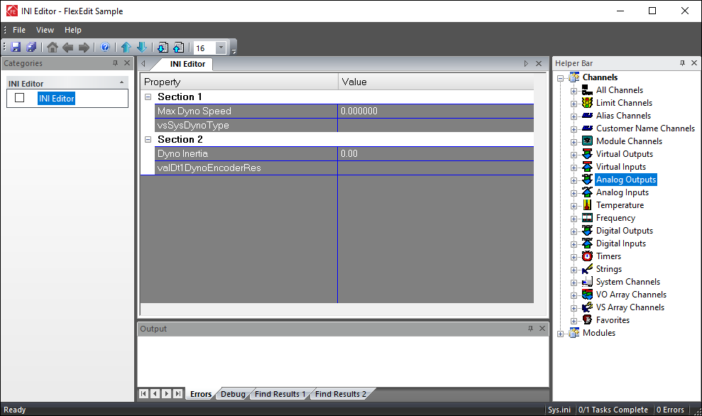
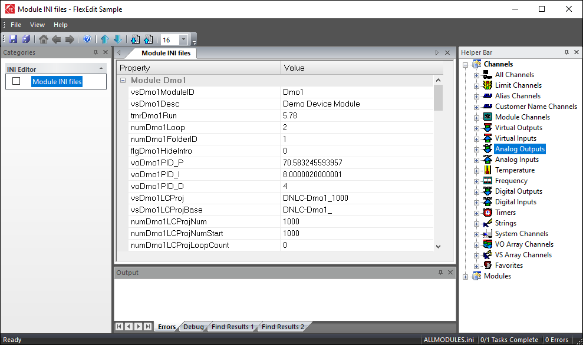

iTest User's Guide
FlexEdit is a generic framework that packages editors together into a workflow that can be customized for a given facility and testing methodology. Each FlexEdit editor is described in the FlexEdit Editors documentation. The FlexEdit framework is complied of the most frequent tasks that an operator must perform. This document details how to customize the FlexEdit framework to best suit the testing enviroment.
The following categories have been identified as an example list of tasks that an operator may perform prior to running the test:
Each category will likely be divided into specific tasks. Some example tasks from the categories listed above include:
The framework for FlexEdit is accomplished through the use of XML files. The XML files define the categories and tasks in addition to the specific behavior and appearance of each. When launching FlexEdit, you can specify which XML file to open. If an XML file is not specified, then the default FlexEdit.xml file will be launched. For more information about launching FlexEdit, refer to the Launching FlexEdit documentation.
The root tag of the XML file is <flexedit>. For a complete list of tags, refer to the FlexEdit Tags documentation.
Categories are used to organize workflow tasks and are listed under the <categories> element. You can customize each category's name, icon, and workflow tasks using the child tags described in the table below:
Categories Child Tags
| Tag | Description |
| <category> | Declares the category in the XML file. This tag contains child tags. Refer to the Category Child Tags table below for more information. |
Category Child Tags
| Tag | Description |
| <icon> | The icon for the category. See <icon> for more information. |
| <name> | The name for the category. See <name> for more information. |
| <tasks> | Each category should have one or more tasks defined. Tasks can include editors and actions for the operator to work on; these are listed under the <task> child tag. For more information, refer to the <tasks> section below. |
Example:
The example below shows the XML for defining a category:
<categories>
<category>
<name>Category</name>
<icon>C:\ADT\iTest4.3\ART\AND11.bmp</icon>
<tasks>
<task>
:
</task>
</tasks>
</category>
</categories>
Tasks represent the different assignments performed by the operator to prepare for upcoming tests or to influence tests that are currently running. These are listed under the <tasks> element. You can customize each task's names, icon, file, editor, and more using the child tags described in the tables below:
Tasks Child Tags
| Tag | Description |
| <task> | Declares the workflow task in the XML file. This tag contains child tags. Refer to the Task Child Tags table below for more information. |
Task Child Tags
| Tag | Description |
| <actions> | The commands that are automatically performed during a global event or an event tied to a task. This tag contains child tags. For more information, refer to the <actions> section below. |
| <backcolor> | The background color of the window or tab. See <backcolor> for more information. |
| <buttontext> | The text for the button displayed at the bottom of the property grid. See <buttontext> for more information. |
| <checkable> | Allows a task to be checked manually or programmatically. See <checkable> for more information. |
| <disablemenulist> | Disables functionality, at the task level, related to saving and restoring configurations and tasks. See <disablemenulist> for more information. |
| <duplicate> | Enables the Duplicate and Delete right-click options. See <duplicate> for more information. |
| <editor> | Overrides the default editor for a given file extension, define an editor for unknown file extensions, or provide more information required for files. This tag contains child tags. For more information, refer to the <editor> section below. |
| <enableoverwrite> | The file paths that can be overwritten when using the Restore Configuration, Restore Tasks..., and Server Download features. See <enableoverwrite> for more information. |
| <file> | The file that is passed to the editor to work on. See <file> for more information. |
| <hascheck> | Determines if the task's checkbox is shown. See <hascheck> for more information. |
| <help> | Adds help text for the operator when the Help button is clicked. See <help> for more information. |
| <icentral> | The subfolder used to store the uploaded files in regards to both the Server Upload and Server Download functionality. See <icentral> for more information. |
| <icon> | The icon for the task. See <icon> for more information. |
| <inhibitsavechannel> | The name of an iTest channel that controls whether the task data can be saved. See <inhibitsavechannel> for more information. |
| <maxchan> | The maximum number of channels that can be addressed to the LOL file. See <maxchan> for more information. |
| <menu> | The name of the operation you want to disable. See <menu> for more information. |
| <name> | The name of the task. See <name> for more information. |
| <path> | The files in the stored location that may be overwritten by the Restore Configuration, Restore Tasks..., and Server Download features. See <path> for more information. |
| <saveitem> | Determines if the file is included when the operator saves an entire configuration. See <saveitem> for more information. |
| <saveitemlist> | This is used in conjunction with the Save Configuration and Server Upload operations to modify the files that are saved. See <saveitemlist> for more information. |
| <sections> | Specifies a list of user groups that have access to the task. See <sections> for more information. |
| <textcolor> | The text or foreground color of the window or tab. See <textcolor> for more information. |
| <tooltip> | The tooltip for the task. See <tooltip> for more information. |
Example:
<tasks>
<task>
<name>INI Editor</name>
<icon>$SUPPORTDIR\Art\Configuration_9.ico</icon>
<file>$SUPPORTDIR\Sys.ini</file>
<help>C:\ADT\iTest4.3\Execute\WWW\Help\UserGuide\FlexEdit.html</help>
<hascheck>TRUE</hascheck>
<checkable>TRUE</checkable>
<textcolor>255,0,0</textcolor>
<backcolor>255,255,255</backcolor>
<tooltip>INI Editor</tooltip>
<editor>
<type>ini</type>
</editor>
</task>
</tasks>
The Actions element is used to automatically perform one or more commands. These actions may be triggered through a global event, such as performing a Restore Configuration operation, or through events tied to a task.
 |
WARNING: | FlexEdit does not wait for an action to be completed unless the <completechannel> tag is present. |
Actions Child Tags
| Tag | Description |
| <action> | Declares the action in the XML file. This tag contains child tags. Refer to the Action Child Tags table for more information. |
Action Child Tags
| Tag | Description |
| <command> | The command to run as part of the action. See <command> for more information. |
| <commandargs> | The argument for MAILSLOT, EXE, and MSG commands. See <commandargs> for more information. |
| <completechannel> | The name of a channel that will be set to 0 before the action is started. See <completechannel> for more information. |
| <event> | Defines which event the action is associated with. See <event> for more information. |
| <timeout> | The number of seconds that FlexEdit will wait for the <completechannel> to become non-zero. See <timeout> for more information. |
Example:
<action>
<event>FIRSTSELECT</event>
<command>MAILSLOT</command>
<commandargs>Softpanel>>Hello World</commandargs>
</action>
The Editor element is used to either override the default editor for a given file extension, define an editor for unknown file extensions, or provide more information required for files.
Editor Child Tags
| Tag | Description |
| <akafile> | Specifies an AKA file for the AIM, AOM, and DYNCALC editors. See <akafile> for more information. |
| <alias2label> | The text to use for the column header instead of Alias2. See <alias2label> for more information. |
| <channellistfiles> | Specifies a list of LOL or AKA files which are used to define the set of channels you can add to the current file. See <channellistfiles> for more information. |
| <checkuserdefined1> | Adds analog inputs and analog outputs that have the User Defined1 RDB field value set to a non-zero value for the AIM and AOM editors. See <checkuserdefined1> for more information. |
| <dll> | Specifies the DLL to use for a DLL plug-in editor. For more information, refer to the Pre-Build Mapping DLLs section below. |
| <filenamesubstring> | Enables you to load all module INI files that use the [MID][Keyword].ini naming convention. See <filenamesubstring> for more information. |
| <inputchannelfilter> | Provides an automatic, case-sensitive filter of the list of available iTest channels for mapping when an Input interface is selected for the Can and Asap editors. See <inputchannelfilter> for more information. |
| <modal> | Launches an EXE style editor with the modal option. See <modal> for more information. |
| <nodeletenames> | Specifies the names of channels that cannot be removed from the LOL file. See <nodeletenames> for more information. |
| <outputchannelfilter> | Provides an automatic, case-sensitive filter of the list of available iTest channels for mapping when an Output interface is selected for the Can and Asap editors. See <outputchannelfilter> for more information. |
| <readonly> | Determines if the AIM, AOM, and INI editors contain read-only fields. See <readonly> for more information. |
| <showalias2> | Shows the Alias2 column in the AIM and AOM editors. See <showalias2> for more information. |
| <showunits> | Shows the units in an INI editor. See <showunits> for more information. |
| <type> | This overrides a given file extension with a different built-in editor, provides an editor to use for an unknown file extension, provides an editor to use with a pre-built mapping DLL, or defines editors that are not related to a specific file. See <type> for more information. |
| <values> | Defines the values that are placed in a section for an INI editor. See <values> for more information. |
Example:
<editor>
<type>CAN1</type>
<dll>FlexEditCan.dll</dll>
</editor>
These options apply to the entire tool and not to a specific category or task.
Global Option Tags
| Tag | Description |
| <actions> | Defines extra commands to be performed before or after a Restore Configuration operation. For more information, refer to the <actions> section. |
| <allowmultipletasks> | Allows multiple editors to write to the same file. See <allowmultipletasks> for more information. |
| <candebug> | Displays the Messages and Signals buttons to appear for CAN bus editing. See <candebug> for more information. |
| <debug> | Creates a separate log file. See <debug> for more information. |
| <home> | Specifies the homepage. See <home> for more information. |
| <readonlytextcolor> | Specifies the text color for read-only cells, rows, and columns in the spreadsheet. See <readonlytextcolor> for more information. |
| <saveitems> | Designates additional files to be included in the ZIP file generated by the Save Configuration operation. See <saveitems> for more information. |
| <saveshowtask> | Displays the task name instead of the filename and path. See <saveshowtask> for more information. |
| <servershare> | Allows the use of a servershare without any revision control. See <servershare> for more information. |
| <tabs> | Disables the tabbed document view within FlexEdit. See <tabs> for more information. |
| <upload> | Disables the Upload button if connected to LabCentral. See <upload> for more information. |
Example:
<flexedit>
<title>FlexEdit Sample</title>
<home>$SYSTEMDIR/Execute/WWW/FlexEdit.htm</home>
<debug>TRUE</debug>
<tabs>true</tabs>
<allowmultipletasks>
<file>$SUPPORTDIR\config.drv</file>
<file>$SUPPORTDIR\TestNotes.txt</file>
<file>$SUPPORTDIR\DB\Customer\NewCustomerNames1.aka</file>
<file>$SUPPORTDIR\DB\Customer\NewCustomerNames2.aka</file>
</allowmultipletasks>
The Global Editor Settings element is used to customize columns for any spreadsheet style editor that supports global customization. Customization is the ability to define which columns are present in the editor and the order of the columns. Each column should represent a specific RDB field in most cases. Defining an entry in this element will affect every instance of the editor in the configuration. Not all editors support global customization.
This element is normally at the top of the XML file. Each setting is listed under the <globaleditors> tag, which is a child tag of the <flexedit> tag.
Global Editors Child Tags
| Tag | Description |
| <globaleditor> | Declares the Global Editor Settings in the XML file. This tag has child tags. See the Global Editor Child Tags table below for more information. |
Global Editor Child Tags
| Tag | Description |
| <column> | Configures columns for the LIM, AKA, AIM, and AIM editors. See <column> for more information. |
| <fixedchannel> | Allows the user add/remove lines in the dynamic calculation file. See <fixedchannel> for more information. |
| <fixedcol> | Enables the user to scroll through the LIM, AIM, AOM, and AKA editors horizonatally while maintaining a fixed value of a defined column. See <fixedcol> for more information. |
| <hiddenchannels> | Hides specified channels. See <hiddenchannels> for more information. |
| <limitinactivecolor> | Specifies the color for inactive channel limits for the LIM editor. See <limitinactivecolor> for more information. |
| <nodeletenames> | Specifies the names of channels that cannot be removed from the LOL file. See <nodeletenames> for more information. |
| <type> | Specifies the file type that is being customized. See <type> for more information. |
Example:
<globaleditors>
<globaleditor>
<type>lim</type>
<columns>
<column>
<label>Name</label>
<rdbfield>Customer Name</rdbfield>
</column>
<column>
<label>Alias</label>
<rdbfield>Alias</rdbfield>
</column>
</columns>
</globaleditor>
<globaleditor>
<type>lol</type>
<nodeletenames>
<name>voTest1</name>
</nodeletenames>
</globaleditor>
</globaleditors>
INI files are typically name=value pairs where the name refers to an iTest channel or customer name, and the value is assigned to that channel in the RDB. Defining the fields for an INI editor can be done by modifying the tags in the XML file or by directly modifying the INI file. To define the fields using XML, use the <values> element. Refer to the table below for more information on how to further define the <values> element.
Value Child Tags
| Tag | Description |
| <checkfileexist> | Displays an error message if any non-existent filenames are entered. See <checkfileexist> for more information. |
| <filter> | Specifies the contents of the file type drop-down menu. See <filter> for more information. |
| <initialdir> | Specifies the initial directory. See <initialdir> for more information. |
| <invalidtext> | Specifies invalid text strings that should not appear in the entered text. See <invalidtext> for more information. |
| <label> | Defines the label or heading used for that cell in the editor. See <label> for more information. |
| <len> | The maximum number of characters or digits that can be entered. See <len> for more information. |
| <max> | Displays an error message if an invalid value is entered. See <max> for more information. |
| <min> | Displays an error message if an invalid value is entered. See <min> for more information. |
| <name> | Defines the name portion of the name=value pair listed in the INI file. See <name> for more information. |
| <nameonly> | Only the specified file/folder name will be returned. See <nameonly> for more information. |
| <picklist> | Defines the picklist file. See <picklist> for more information. |
| <precision> | The number of digits of precision. See <precision> for more information. |
| <readonly> | Disables editing of the editor's fields. See <readonly> for more information. |
| <root> | Specifies the root of the file system tree. See <root> for more information. |
| <showallchannels> | Displays the remaining data from the INI file to be displayed. See <showallchannels> for more information. |
| <shownewfolder> | Specifies whether the New Folder button is available on the Folder Selection dialog. See <shownewfolder> for more information. |
| <sortvalues> | Sorts channel names (or labels) alphanumerically. See <sortvalues> for more information. |
| <type> | Determines the field's data type. See <type> for more information. |
Example:
<values>
<value>
<name>Example</name>
<type>PKL</type>
<picklist>Dmo1Ex.PKL</picklist>
</value>
</values>
The following tags control the background and text colors used to display the headings and properties as well as the line color:
Tags
| Tag | Description |
| <backgroundcolor> | Specifies the background color for property and value fields. See <backgroundcolor> for more information. |
| <linecolor> | Specifies the color of the lines that divide the fields. See <linecolor> for more information. |
| <sectionbackgroundcolor> | Specifies the background color for the header field. See <sectionbackgroundcolor> for more information. |
| <sectiontextcolor> | Specifies the text color for the header field. See <sectiontextcolor> for more information. |
| <textcolor> | Specifies the text color for the property and value fields. See <textcolor> for more information. |
Example:
<editor>
<type>ini</type>
<backgroundcolor>128,128,128</backgroundcolor>
<textcolor>255,255,255</textcolor>
<sectionbackgroundcolor>255,255,255</sectionbackgroundcolor>
<sectiontextcolor>0,0,0</sectiontextcolor>
<linecolor>0,0,255</linecolor>
</editor>
Example - Background and Text Colors
The <sections>, <section>, and <name> tags allow the creation of display headers and control the grouping of <values> under the headers. A <value> contains a <name> tag that defines the iTest channel that will be displayed under the display header. The header from the INI file is ignored. The iTest channels are displayed in the order that the <sections> are defined; <sections> and <values> are not sorted.
Tags
| Tag | Description |
| <name> | The header name for the section. See <name> for more information. |
| <sections> | Begins the declaration of sections. See <sections> for more information. |
| <section> | Begins the declaration of a section. See <section> for more information. |
| <values> | Declares the values that are displayed as the properties within the header. See <values> for more information. |
Example:
<editor>
<type>ini</type>
<sortvalues>TRUE</sortvalues>
<showallchannels>FALSE</showallchannels>
<backgroundcolor>128,128,128</backgroundcolor>
<textcolor>255,255,255</textcolor>
<sectionbackgroundcolor>255,255,255</sectionbackgroundcolor>
<sectiontextcolor>0,0,0</sectiontextcolor>
<linecolor>0,0,255</linecolor>
<sections>
<section>
<name>Section 1</name>
<values>
<value>
<name>vsSysDynoType</name>
<type>EDIT</type>
<len>10</len>
</value>
<value>
<name>spdDt1DynoMax</name>
<label>Max Dyno Speed</label>
<type>NUM</type>
<len>5</len>
</value>
</values>
</section>
<section>
<name>Section 2</name>
<values>
<value>
<name>valDt1DynoInertia</name>
<label>Dyno Inertia</label>
<type>NUM</type>
<len>5</len>
<precision>2</precision>
<readonly>FALSE</readonly>
</value>
<value>
<name>valDt1DynoEncoderRes</name>
<type>COMBO</type>
<picklist>modules.pkl</picklist>
</value>
</values>
</section>
</sections>
</editor>
Example - Sections in INI Editor

The allmodules value for the <file> tag is used to display all module INI files. The module IDs are located in the $SUPPORTDIR\VXI\sources.ary file. The INI substring is then appended to each module ID, and these INI files are concatenated into the allmodules.ini file. The contents of the allmodules.ini file are displayed in the editor. When edits are saved, the content of the allmodules.ini file is written back to the individual INI files.
The <filenamesubstring> tag can be used all module INI files that use the [MID][Keyword].ini naming convention. See <filenamesubstring> for more information.
Example:
<task>
<name>Module INI files</name>
<file>allmodules</file>
<editor>
<type>ini</type>
</editor>
</task>
Example - Module INI Files

It may be necessary to embed more information in the INI files to provide a more in-depth interface for the operator to enter information. The FlexEdit editor will support additional configuration information provided in the comments section of the INI files in order to provide a better editor. Each relevant comment section should appear on the line above the name=value pair being configured.
An INI configuration line should appear as a comment (starting with an asterisk) with the following format:
*label=”Enter Value” type=EDIT len=10 precision=2 picklist=picklist.pkl readonly=true
The following tags are used for this configuration:
Tags
| Tag | Description |
| <label> | Defines the label for the column. See <label> for more information. |
| <len> | The maximum number of characters or digits that can be entered. See <len> for more information. |
| <picklist> | Defines the picklist file to use. See <picklist> for more information. |
| <precision> | Specifies the number of digits of precision. See <precision> for more information. |
| <type> | Defines the type of data in the column. This tag is required. See <type> for more information. |
FlexEdit allows you to modify your test solution configuration. The resulting configuration is saved and outputted as a ZIP file either to a LabCentral server or to a local folder. These same files can later be used to restore your test solution configuration to a known state. You may also restore other files regardless of the file type. For more information on how to use this feature, refer to the Using Save and Restore documentation.
When saving the configuration to a LabCentral server, use the following structure:
under Lab Files: ..\Repository\FileStorage\
Flexedit
(Solution Name)
(entered filename).zip
The entered comments are visible in LabCentral's Manage Lab Files page via the Check-in Comment column.
If a <servershare> tag is present in the FlexEdit.xml file, then the configuration will be saved to a local folder. This local folder can either be on the same PC or can be a network share. The folder path defined in the <servershare> tag must be a fully-qualified path or a macro (e.g., $SYSTEMDIR) can be used.
Examples:
<serveshare>C:\ADT\iTest3.6\StoredFlexEditConfig</servershare> <servershare>\\FileRepository\StoredFlexEditConfig</serveshare> <servershare>$SYSTEMDIR\StoredFlexEditConfig</servershare>
When stored locally, the file structure is as follows:
<servershare> tag
FlexEdit
(Solution Name)
(entered filename).zip
(entered filename).zip.comment
By default, the file is saved as a ZIP file; the entered comments are stored in the *.zip.comment file.
The configuration files to save are derived from the following tags:
Tags
| Tag | Description |
| <file> | The default file to be saved to the ZIP file. See <file> for more information. |
| <saveitemlist> | Either replaces the files to be saved or adds additional files to be saved based on the type of task. |
| <saveitems> | Adds additional files to the saved ZIP file. See <saveitems> for more information. |
The Restore Configuration feature replaces the current FlexEdit settings with a previously saved configuration. You may restore default .zip extensions or other file types. If there are multiple saved configurations, the user is provided with a list of available configurations. The *<servershare> tag determines whether a local folder or a LabCentral server is searched for the saved files.
In most cases, Restore Configuration will replace the existing files with its saved files. The exceptions are listed below:
FlexEdit includes the use of the following custom DLLs:
Custom DLLs
| DLL | Description |
| FlexEditAsap.dll | Creates mappings for the Asap3Plus driver. |
| FlexEditCan.dll | Creates mappings for the CanNeo and CanXC16 drivers. |
| FlexEditCas.dll | Creates mappings for the CASPC driver. |
| FlexEditCombustion.dll | Creates mappings for the Combustion driver. |
| FlexEditIndiset.dll | Creates mappings for the Indiset and AVLIndicomAutomation drivers. |
| FlexEditXCPMaster.dll | Creates mappings for the XCPMaster driver. |
The purpose of the DLLs is to enable the operator the ability to assign channels from a device to an already existing iTest channel. This can be done while iTest is running or before a test. In order to map to the channel while iTest is running, the channel name being mapped to must not have been referenced in VCL. For more information, refer to the DLL Mapping Editor documentation.
Each DLL performs the following basic functions:
These DLLs can be added to your FlexEdit configuration by adding the <dll> tag to the <editor> element. See <dll> for more information.
Example:
<dll>FlexEditAsap.dll</dll>
FlexEdit supports writing completely new editors as DLLs via Visual Studio. The plug-ins architecture creates a CDialog class within an MFC C++ project, and then tells FlexEdit the HWND for the CDialog. FlexEdit will dynamically look for this function to register your HWND: FlexEdit_Create.
Example:
extern "C" HWND FlexEdit_Create(LPFLEXEDIT_CREATESTRUCT bcs)
{
AFX_MANAGE_STATE(AfxGetStaticModuleState());
if (0 == _tcsicmp(bcs->szType, _T("txt")))
{
CTextDialog *dlg = new CTextDialog;
dlg->Create(dlg->IDD);
SetParent(dlg->GetSafeHwnd(), bcs->hwndParent);
dlg->Load(bcs->szFilePath);
return dlg->GetSafeHwnd();
}
return NULL;
}
FlexEdit and DLLs also communicate using several Windows messages. These messages are defined in the FlexEdit_Api.h file. The messages are processed by the base class and turned into function calls.
Your DLL will need to implement the SaveMappingInfo(), GetNumConfigFiles(), and GetConfigFile() virtual functions. FlexEdit will call these functions to get the number and names of any files that need to be included in the LabCentral ZIP file.
Example:
//=============================================================================
// The CAN driver saves the mapping info in the DRV file. We also save
// the current dialog settings so they can be restored on the next edit.
//=============================================================================
/*virtual*/void CFlexEditCan::SaveMappingInfo( void )
{
}
//=============================================================================
// We have config.drv, FlexEditCan.ini and one or more CSV files to save.
//=============================================================================
/*virtual*/ int CFlexEditCan::GetNumConfigFiles()
{
int count = m_csConfigFilePaths.GetCount();
return count;
}
//=============================================================================
// 0 is config.drv. 1 is FlexEdit.ini. 2 and 3 are the CSV files.
//=============================================================================
/*virtual*/ CString CFlexEditCan::GetConfigFile( int iIndex )
{
int count = m_csConfigFilePaths.GetCount();
if ((iIndex >= 0) && (iIndex < count))
{
return m_csConfigFilePaths.GetAt( iIndex );
}
else
{
return "";
}
}
Currently, there is a single message that your driver sends to FlexEdit. This message notifies FlexEdit that one or more files have been modified and the files need to be saved before closing. The message is sent using SendMessage:
GetParent()->SendMessage(WM_FLEXEDIT_MESSAGE, BM_SETMODIFIEDFLAG, 1);
FlexEdit is designed to trap <a href> links in pages that it contains that can be directed at FlexEdit itself. These links all start with "FlexEdit" as the prefix followed by an underscore, and then by the action to perform. Currently, the supported links include:
Example:
<a href="FlexEdit_AIM"><img src="link.gif" style="border:0;" width="9" height="9">Analog Input Management ...</a> <br>
The example below demonstrates the syntax for a FlexEdit.xml file:
Example:
<?xml version="1.0" encoding="utf-8"?>
<flexedit>
<title>FlexEdit Example</title>
<home>$SupportDir/Execute/FlexEdit Ex.htm</home>
<debug>true</debug>
<tabs>true</tabs>
<categories>
<category>
<name>Examples</name>
<icon>$SUPPORTDIR\Art\Configuration_4.ico</icon>
<tasks>
<task>
<name>DSP Type Display</name>
<file>$SUPPORTDIR\Execute\Custom\Dmo1Legacy.dsp</file>
</task>
<task>
<name>Customer Names</name>
<file>$SUPPORTDIR\DB\Customer\CustomerNames.aka</file>
<actions>
<action>
<event>AFTERSAVE</event>
<command>CHECK</command>
</action>
</actions>
</task>
<task>
<name>Dynamic Calculations</name>
<file>$SUPPORTDIR\Calculations\Dynamic\Dmo1DC.dat</file>
<editor>
<type>DYNCALC</type>
</editor>
<actions>
<action>
<event>AFTERSAVE</event>
<command>CHECK</command>
</action>
</actions>
</task>
<task>
<name>Analog Input</name>
<editor>
<type>AIM</type>
</editor>
</task>
<task>
<name>Analog Output</name>
<editor>
<type>AOM</type>
</editor>
</task>
<task>
<name>Data Log List</name>
<file>$SUPPORTDIR\DATA\MAIN.LOL</file>
<actions>
<action>
<event>AFTERSAVE</event>
<command>CHECK</command>
</action>
</actions>
</task>
<task>
<name>Blackbox Log List</name>
<file>$SUPPORTDIR\DATA\blackbox.LOL</file>
<actions>
<action>
<event>AFTERSAVE</event>
<command>CHECK</command>
</action>
</actions>
</task>
<task>
<name>Button Example</name>
<buttontext>Try</buttontext>
<help>The BUTTON event is only recognized by the INI editor. Adding this event to an INI editor task </help>
<help>will cause a button to appear at the bottom of the property grid. Clicking it will run any BUTTON</help>
<help>actions added to the Task.</help>
<help> </help>
<help>Help lines can add text to give to the operator when the help button is pressed. Some of the editors </help>
<help>have built-in help. These tags will override the built-in help text.</help>
<editor>
<type>ini</type>
</editor>
<actions>
<action>
<event>BUTTON</event>
<command>MAILSLOT</command>
<commandargs>DATA_ENGINE>>SEQUENCE START Try</commandargs>
</action>
</actions>
</task>
</tasks>
</category>
</categories>
</flexedit>